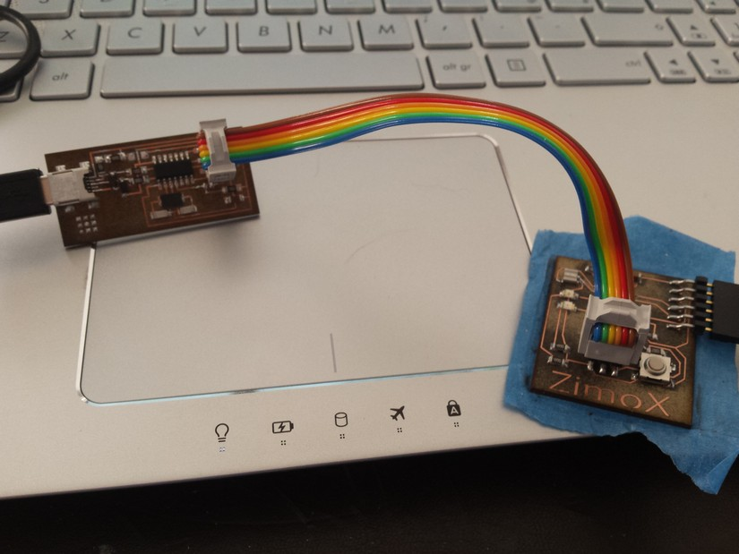
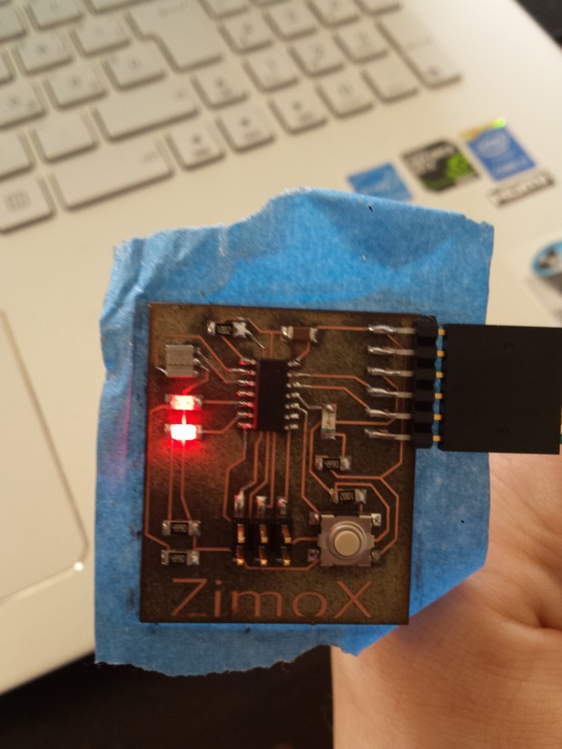

Embedded Programming
Week 7 assignment is to program the hello board we build in the previous week of electronic design.
We have also to try to program this board whit different method.
I do a lot of program in C but on other microcontroller like Microchip and MSP430 from TexasIinstrument.
But different compiler have different instruction set, semantics, and peripheral control.
For this reason first I search a tutorial on AVR-GCC programming language and programming technique.
i found a useful tutorial that you can find below, in it there are all the thing I need to use makefile and learn a little about c programming for Atmel compiler.
Download the PDF tutorial AVR-GCC
Searching in the tutorial PDF I found a way to make a simple program who light up and turn of the led in toggle when the button is pressed, and it make a denounce on the button press event.
Firs I take a look at the make file (copied from the tutorial and the FabAccademy tutorial) I have modified in the file the name of the c file to build it whit makefile.
PROJECT=debounceled
SOURCES=$(PROJECT).c
MMCU=attiny44
F_CPU = 20000000
CFLAGS=-mmcu=$(MMCU) -Wall -Os -DF_CPU=$(F_CPU)
$(PROJECT).hex: $(PROJECT).out
avr-objcopy -O ihex $(PROJECT).out $(PROJECT).c.hex;\
avr-size --mcu=$(MMCU) --format=avr $(PROJECT).out
$(PROJECT).out: $(SOURCES)
avr-gcc $(CFLAGS) -I./ -o $(PROJECT).out $(SOURCES)
program-bsd: $(PROJECT).hex
avrdude -p t44 -c bsd -U flash:w:$(PROJECT).c.hex
program-dasa: $(PROJECT).hex
avrdude -p t44 -P /dev/ttyUSB0 -c dasa -U flash:w:$(PROJECT).c.hex
program-avrisp2: $(PROJECT).hex
avrdude -p t44 -P usb -c avrisp2 -U flash:w:$(PROJECT).c.hex
program-avrisp2-fuses: $(PROJECT).hex
avrdude -p t44 -P usb -c avrisp2 -U lfuse:w:0x5E:m
program-usbtiny: $(PROJECT).hex
avrdude -p t44 -P usb -c usbtiny -U flash:w:$(PROJECT).c.hex
program-usbtiny-fuses: $(PROJECT).hex
avrdude -p t44 -P usb -c usbtiny -U lfuse:w:0x5E:m
program-dragon: $(PROJECT).hex
avrdude -p t44 -P usb -c dragon_isp -U flash:w:$(PROJECT).c.hex
And here is the file c of my simple project.
#include < avr/io.h>
#include < inttypes.h>
#ifndef F_CPU
#define F_CPU 20000000UL
/* quartz with 20 MHz */
#endif
#include < avr/delay.h>
/* defines _delay_ms () off avr libc version 1.2.0 */
inline uint8_t debounce(volatileuint8_t *port, uint8_t pin)
{
if(!(*port &(1<< pin)))
{
/* pin was pulled on mass, 100ms waits */
_delay_ms(100);
if(*port &(1<< pin))
{
/* give user time for releasing the button */
_delay_ms(100);
return 1;
}
}
return 0;
}
int main (void)
{
DDRA &= ~(1 << PA3); /* pin PB0 on input (button)*/
PORTA |=(1<< PA3); /* Pull-up resistance activate */
if(debounce(&PINA, PA3)) /* case button pressed to pin PB0..*/
PORTA = PINA ^ (1<< PA7); /* .. LED at Port PA7 on and/or switch off */
}
Download folder whit the project
Here the terminal output of the programmation via Fabisp of the fuses and after of the flash program
Simone@ZIMOX:debounceled Simone$ sudo make program-usbtiny-fuses
Password:
avr-objcopy -O ihex debounceled.out debounceled.c.hex;\
avr-size --mcu=attiny44 --format=avr debounceled.out
AVR Memory Usage
----------------
Device: attiny44
Program: 166 bytes (3.8% Full)
(.text + .data + .bootloader)
Data: 0 bytes (0.0% Full)
(.data + .bss + .noinit)
avrdude -p t44 -P usb -c usbtiny -U lfuse:w:0x5E:m
avrdude: AVR device initialized and ready to accept instructions
Reading | ################################################## | 100% 0.00s
avrdude: Device signature = 0x1e9207
avrdude: reading input file "0x5E"
avrdude: writing lfuse (1 bytes):
Writing | ################################################## | 100% 0.00s
avrdude: 1 bytes of lfuse written
avrdude: verifying lfuse memory against 0x5E:
avrdude: load data lfuse data from input file 0x5E:
avrdude: input file 0x5E contains 1 bytes
avrdude: reading on-chip lfuse data:
Reading | ################################################## | 100% 0.00s
avrdude: verifying ...
avrdude: 1 bytes of lfuse verified
avrdude: safemode: Fuses OK (E:FF, H:DF, L:5E)
avrdude done. Thank you.
Simone@ZIMOX:debounceled Simone$ sudo make program-usbtiny
avr-objcopy -O ihex debounceled.out debounceled.c.hex;\
avr-size --mcu=attiny44 --format=avr debounceled.out
AVR Memory Usage
----------------
Device: attiny44
Program: 166 bytes (3.4% Full)
(.text + .data + .bootloader)
Data: 0 bytes (0.0% Full)
(.data + .bss + .noinit)
avrdude -p t44 -P usb -c usbtiny -U flash:w:debounceled.c.hex
avrdude: AVR device initialized and ready to accept instructions
Reading | ################################################## | 100% 0.01s
avrdude: Device signature = 0x1e9207
avrdude: NOTE: "flash" memory has been specified, an erase cycle will be performed
To disable this feature, specify the -D option.
avrdude: erasing chip
avrdude: reading input file "debounceled.c.hex"
avrdude: input file debounceled.c.hex auto detected as Intel Hex
avrdude: writing flash (166 bytes):
Writing | ################################################## | 100% 0.26s
avrdude: 166 bytes of flash written
avrdude: verifying flash memory against debounceled.c.hex:
avrdude: load data flash data from input file debounceled.c.hex:
avrdude: input file debounceled.c.hex auto detected as Intel Hex
avrdude: input file debounceled.c.hex contains 166 bytes
avrdude: reading on-chip flash data:
Reading | ################################################## | 100% 0.43s
avrdude: verifying ...
avrdude: 166 bytes of flash verified
avrdude: safemode: Fuses OK (E:FF, H:DF, L:5E)
avrdude done. Thank you.
all works fine and properly
after that i try to program the hello board whit the arduino IDE, for this reason i found a useful link whit a tutorial to set all things in the IDE
Here the tutorial to use FabISP as a programmer in the arduino IDE and tho set all the data for the attiny44
Afther following all the step to set the IDE to work properly i try to upload some example sketch and i make some of mine.
In the tools dropdown menu we have to select the USBtinyISP as a programmer, attiny as a device and 20Mhz as external clock.
The next slide show the program i made making some changes in the pins and settings
fading of 2 led in opposite direction
int led2 = 8; // the pin that the LED is attached to
int led1 = 7;
int brightness = 0; // how bright the LED is
int fadeAmount = 5; // how many points to fade the LED by
// the setup routine runs once when you press reset:
void setup() {
// declare pin 9 to be an output:
pinMode(led1, OUTPUT);
pinMode(led2, OUTPUT);
}
// the loop routine runs over and over again forever:
void loop() {
// set the brightness of pin 9:
analogWrite(led1, brightness);
analogWrite(led2, 255 - brightness);
// change the brightness for next time through the loop:
brightness = brightness + fadeAmount;
// reverse the direction of the fading at the ends of the fade:
if (brightness == 0 || brightness == 255) {
fadeAmount = -fadeAmount ;
}
// wait for 30 milliseconds to see the dimming effect
delay(30);
}
3 led rolling and changing frequency of the rolling at press of the button
const int buttonPin = 3; // the number of the pushbutton pin
int buttonState = 0; // variable for reading the pushbutton status
int timedelay =100;
// the setup function runs once when you press reset or power the board
void setup() {
// initialize digital pin 13 as an output.
pinMode(2, OUTPUT);
pinMode(7, OUTPUT);
pinMode(8, OUTPUT);
pinMode(buttonPin, INPUT);
}
// the loop function runs over and over again forever
void loop() {
buttonState = digitalRead(buttonPin);
if (buttonState == LOW) {
// turn LED on:
timedelay=timedelay+100;
if (timedelay >500) {
timedelay=100;
}
}
digitalWrite(2, HIGH); // turn the LED on (HIGH is the voltage level)
delay(timedelay); // wait for a second
digitalWrite(2, LOW); // turn the LED off by making the voltage LOW
delay(timedelay); // wait for a second
digitalWrite(7, HIGH); // turn the LED on (HIGH is the voltage level)
delay(timedelay); // wait for a second
digitalWrite(7, LOW); // turn the LED off by making the voltage LOW
delay(timedelay); // wait for a second
digitalWrite(8, HIGH); // turn the LED on (HIGH is the voltage level)
delay(timedelay); // wait for a second
digitalWrite(8, LOW); // turn the LED off by making the voltage LOW
delay(timedelay); // wait for a second
}
Download folder whit the project for arduino IDE
After some text i found the delay time is not properly settend, it means thaht i put one second of delay and it will take like 20 second to change, i try to debug this and i found thaht it can be maybe a wrong calculation in the delay time whit the attiny liubrary so i have to set the file of the clock speed og the attyny44 to 1Mhz instead of 20Mhz in the C:\Program Files\Arduino\hardware\attiny\avr\board.txt
attiny.menu.clock.external20=20 MHz (external)
attiny.menu.clock.external20.bootloader.low_fuses=0xfe
attiny.menu.clock.external20.bootloader.high_fuses=0xdf
attiny.menu.clock.external20.bootloader.extended_fuses=0xff
attiny.menu.clock.external20.build.f_cpu=1000000L

